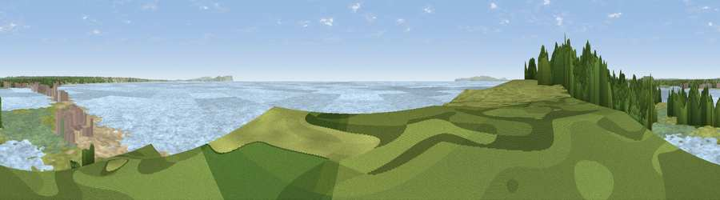

Viewpoint near Wick
#25591 in England · top 38% of its area beats it · near WickWhere it is
The exact computed spot (SZ 17997 90555). Click the marker for map links.
The view, rendered

A 360° render of this exact spot computed from the terrain model, tree cover and land cover — summer colours, afternoon light, calibrated against photographs of famous viewpoints. Real trees, hedges and buildings will differ in detail.
The panorama
Grey silhouette: terrain skyline in each direction (720 bearings, Earth curvature and refraction included). Dashed green: skyline with trees (+15 m) and buildings (+8 m) as obstacles. Blue strip: how far the ground is visible on each bearing.
Where the view opens
Wedge length = distance to the farthest visible ground on that bearing (vegetation-aware). Rings at 10, 25 and 50 km.
What fills the view
74% water · 8% bare ground · 7% wetland · 6% grassland · 3% woodland · 2% built-up
Angular shares of the visible panorama (visual magnitude), not map area. Landscape diversity 0.43 (0–1 Shannon).
Key numbers
More beautiful places nearby
The staircase of upgrades: each row has a higher view potential than everything closer. Driving times are estimates from straight-line distance, calibrated against real road routing — check an actual route before setting out.
| Place | Direction | Drive | Score |
|---|---|---|---|
| Warren Hill | W · 1 km | ~3 min | 60.1 |
| Viewpoint near Totland | ESE · 13 km | ~25 min | 75.0 |
| West High Down | ESE · 14 km | ~25 min | 79.8 |
| Tennyson Down | ESE · 15 km | ~27 min | 83.2 |
| Viewpoint near Harman's Cross | WSW · 19 km | ~33 min | 84.1 |
| Brook Down | ESE · 22 km | ~36 min | 85.3 |
| Mottistone Down | ESE · 23 km | ~38 min | 87.2 |
| Viewpoint near Kimmeridge | WSW · 27 km | ~44 min | 87.5 |
50.71435, -1.74645 · source: osm viewpoint · position refined by local search. Computed location — check access rights before visiting.